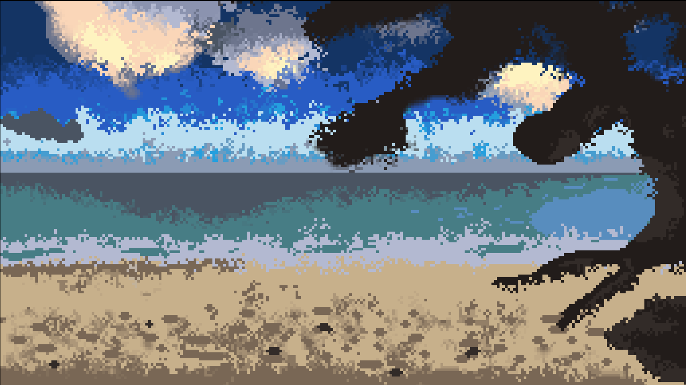
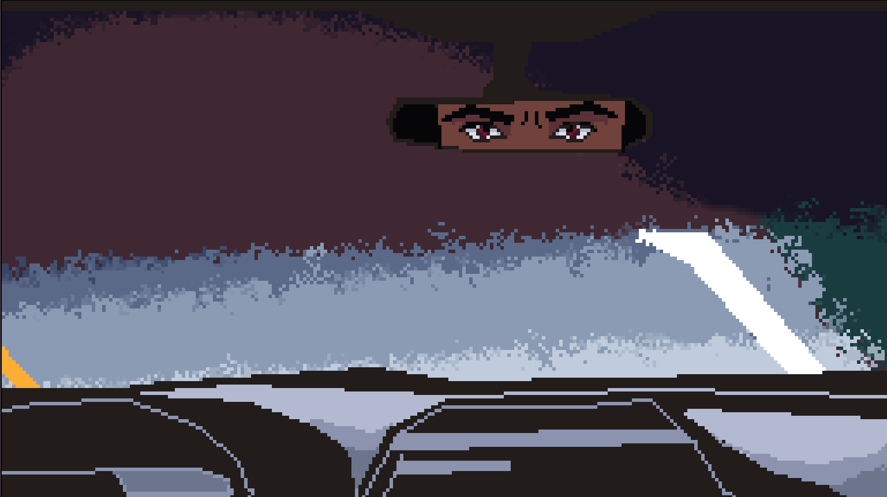
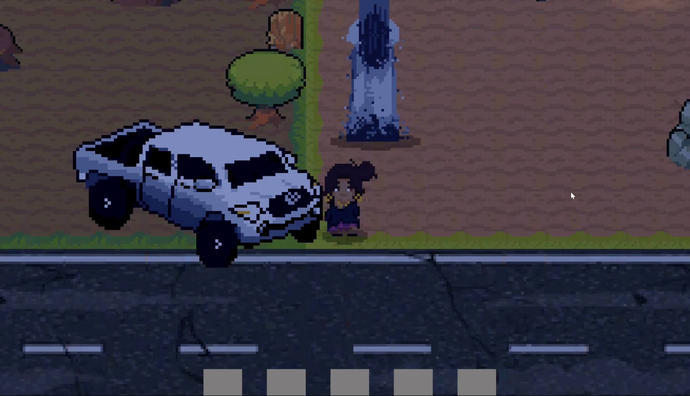
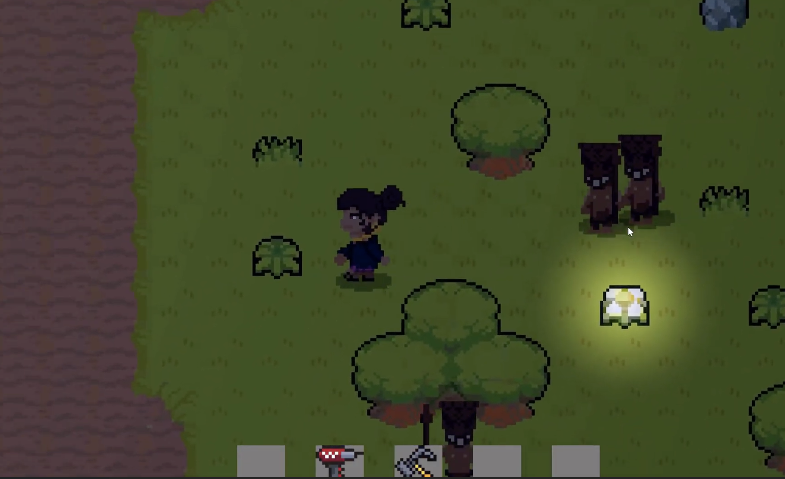
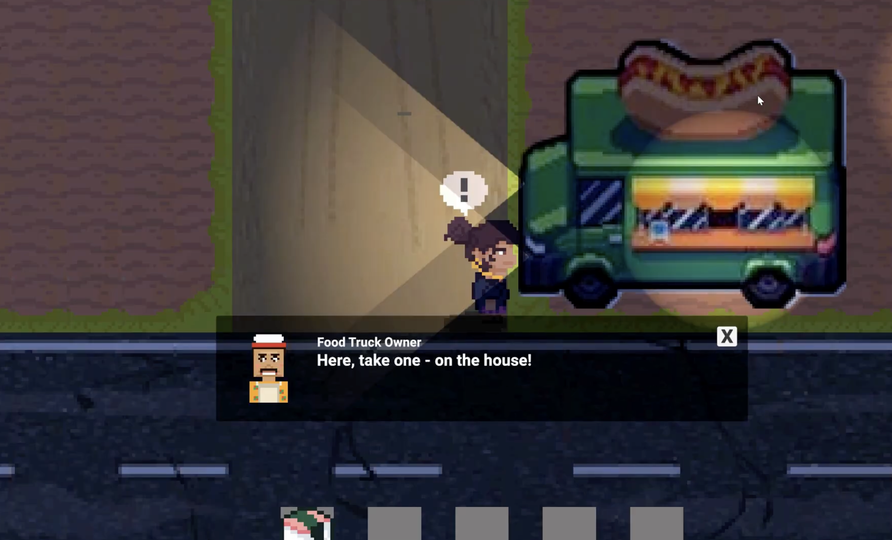
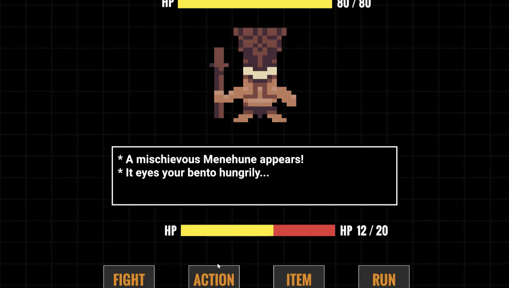
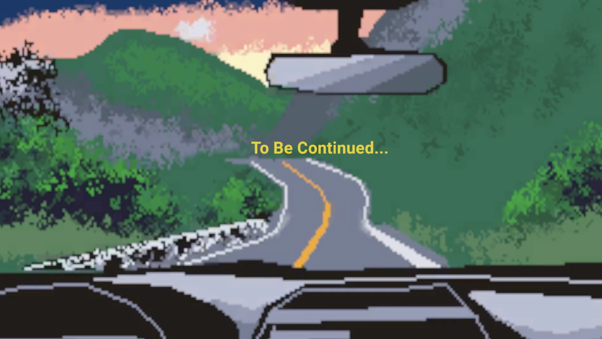

Story & Gameplay
Introduction
The game begins with the player, playing as Kiele, is driving home late at night after going to the beach. The road is quiet and the sky slowly fades from orange to dark.

At first everything seems normal until the player encounters a woman standing along on the side of the road. The womanʻs long black hair and white dress are illuminated by the car headlights, creating an eerie silhouette against the dark backdrop of the night. Her face is obscured by shadows, making it difficult to discern her features.
Kiele recalls that if she does not help the woman, she will be cursed because the woman standing before her is Pele, the Hawaiian goddess of volcanoes and fire.

Since the player is left no choice, Pele quietly enters the vehicle and sits silently in the back seat. Not long after, the car suddenly breaks down on a dark stretch of road in Waimānalo.
The woman reveals herself as Pele and warns Kiele that the Menehune nearby do not want her traveling through the area.

Gameplay
After the car breaks down, the game transitions from cinematic storytelling into active gameplay.
The player takes control of Kiele and must explore the surrounding area searching for missing car parts hidden throughout the map.

While exploring, Kiele must avoid or survive encounters with Menehune hiding throughout the environment. Some Menehune appear alone while others are stronger enemies such as the Menehune Leader.
Along the road, Kiele may discover a food truck that supplies bentos, musubi, and useful tools that can help during encounters.


When encountering Menehune, the player is given multiple choices:
- Fight the Menehune
- Compliment or taunt them
- Trade tools or items
- Offer bentos or musubi
- Run away

Different choices lead to different outcomes. If the wrong action is chosen, the Menehune may become hostile and attack Kiele, causing her health bar to drop.
The player must carefully balance survival, exploration, and interaction while searching for all the missing car parts.
Level Conclusion
After recovering the final missing seat belt piece and surviving the Menehune, Kiele returns safely to the vehicle.
The level concludes with Kiele defeating the Menehune threat and continuing the journey deeper into the night.
